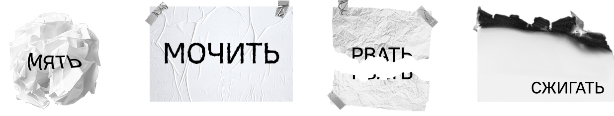

Свойства бумаги
 
летучая мышь
Краткая история
«Я хотел сделать шрифт, которого мне самому не хватало для работы», — Виталий Кузьмин к выходу PT Root
Дизайнер: Виталий Кузьмин
Производитель: ParaType Ltd.
Год: 2018
PT Root UI — интерфейсная версия шрифта PT Root от Виталия
Кузьмина (Paratype), созданная специально для экранов и навигации. По словам автора, именно UI-версию делали
первой: её выпустили бесплатно в 2018 году, а уже потом довели основную текстовую
линейку.
Универсальный закрытый гротеск с немного зауженными пропорциями, простой и нейтральный. У PT Root UI самая
простая форма даже из спокойно-текстовых шрифтов.
Немного зауженные пропорции и небольшая «оквадраченность»
круглых знаков. Это уход от нейтральности, но автор не хотел сделать совсем безликий шрифт. В результате PT Root
UI вышел слегка серьёзным и брутальным, хотя в наборе это почти незаметно.
UI-версия — униширинная, то есть ширина площадки знака в ней остаётся одинаковой во всех четырёх начертаниях.
! ¡ ? ¿ @ ( ) [ ] { } « » _ - — × + ÷ ± ~ ≠ ≤ ≥ * ^# § % ‰ & \ | / . , : ; … “ ” ’ ’ № $ € ₴ ₸ ₽
Аа Бб Вв Гг Дд Ее Ёё Жж Зз Ии Йй Кк Лл Мм Нн Оо Пп Рр Сс Тт Уу Фф Хх Цц Чч Шш Щщ Ъъ Ыы Ьь Ээ Юю Яя
Aa Bb Cc Dd Ff Gg Hh Ii Jj Kk Ll Mm Nn Oo Pp Qq Rr Ss Tt Uu Vv Ww Xx Yy Zz
Шрифт содержит расширенный список специальных знаков, символов и вариации некоторых букв и цифр.
Цифры максимально простые и нейтральные, со слегка «оквадраченными» округлостями и умеренно узкими пропорциями — в духе всего семейства. В крупном кегле выглядят строгими и технологичными, в тексте — не привлекают лишнего внимания и остаются функциональными.